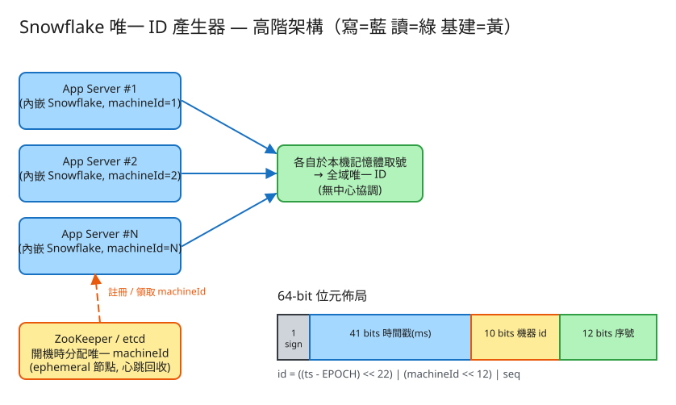

H 基礎設施 看故事就懂 輕鬆讀 25 分鐘
你去銀行、去看診，進門先做一件事：抽一張號碼牌。每個人拿到的號碼都不一樣，而且越晚到的號碼越大，櫃台照號碼順序叫人，不會吵架。
網路系統也一樣：每筆訂單、每則訊息、每位新會員都要一個獨一無二的編號，方便存進資料庫、彼此引用。Snowflake 就是這個「發號碼牌的機器」——但它要在很多台機器上同時發號，而且全世界發出的號碼都不能撞號。
你可能會想：發號還不簡單，弄個櫃台，每來一個人就 +1，發 1、2、3、4…不就好了？這在只有一個櫃台時確實沒問題。但網路服務大起來，會有幾百台機器同時在處理訂單，問題就來了——
這就是傳統「資料庫自動 +1」（auto-increment）的毛病：每發一個號都要問中央那個櫃台，會塞車，而且是單點故障（一個點壞了全倒）。
Snowflake 的聰明之處在於：讓每台機器自己就能發號，根本不用問中央。怎麼做到「各發各的，卻保證不撞號」？答案在下一節的「號碼牌祕密」。
💭 停一下：如果讓每台機器都自己從 1 開始發（1、2、3…），會發生什麼慘劇？
Snowflake 的號碼看起來是一長串數字（像 319639026040573952），其實它是三段東西「拼」起來的。把它想成醫院號碼牌：
Snowflake 的 64 位數字就是這樣拼的，一段一段來：
號碼的最前段放「現在的時間」（精細到毫秒）。因為時間只會往前走，所以越晚發的號，前段數字越大 → 整個號碼也越大。
中間放「我是第幾號機器」。每台機器開機時先領一個專屬編號（像櫃台掛牌「我是 3 號」），之後它發的每個號碼中間都印著「3」。
同一台機器在同一毫秒可能要發好多號。最後一段就放「這一毫秒內，我發到第幾個」：0、1、2、3…遞增。下一毫秒到了就歸零重數。
工程上的「取捨」聽起來很抽象。換個方式記：這台發號機最怕三件事，每個設計都是為了避開某個「怕」。

✏️ 用 Excalidraw 開啟編輯（diagram.excalidraw）白話導讀：
看完上面，這些詞你其實都已經懂了，這裡只是把「工程術語 ↔ 白話」對起來，Part 2 會用到：
| 工程術語 | 白話解釋 |
|---|---|
| 唯一 ID | 獨一無二的編號（像不重複的號碼牌） |
| Snowflake | 「時間＋機器編號＋流水號」拼成的發號法 |
| 64-bit / BIGINT | 號碼用一個 64 位的大整數裝，資料庫存得下 |
| 時間戳（timestamp） | 「現在幾點幾分幾毫秒」，放在號碼最前段 |
| 機器 id | 「我是哪一台機器」，像櫃台掛牌的編號 |
| 序號 / 流水號（seq） | 「這一毫秒內第幾個」，同毫秒往上加 |
| 趨勢遞增（可排序） | 越晚發的號碼越大，能照時間排 |
| auto-increment（自增） | 資料庫的「中央櫃台 +1」發號法（會塞車） |
| 單點故障 | 有個關鍵點壞掉，全系統就停擺 |
| 時鐘回撥 | 機器的錶突然倒退，會害它發出重複號 |
| ZooKeeper / etcd | 中央登記處，幫每台機器發不重複的編號 |
| epoch（紀元） | 「從哪一天開始算時間」的起點 |
| UUID | 另一種更長的亂數編號（128 位、零協調） |
| 估什麼 | 大概數字 | 所以呢？ |
|---|---|---|
| 一台機器一毫秒能發幾個 | 流水號那段 = 4096 個 / 毫秒 | 同一瞬間爆量也夠用，發滿就等下一毫秒 |
| 一台機器一秒能發幾個 | 4096 × 1000 ≈ 409 萬 / 秒 | 單機就很猛了 |
| 整群機器一秒能發幾個 | 1024 台 × 409 萬 ≈ 41.9 億 / 秒 | 幾乎用不完，產量不是瓶頸 |
| 時間段能撐幾年 | 時間那段 ≈ 69 年 | 從上線那天算，夠用很久 |
💭 停一下：產量明明用不完，為什麼工程師反而最緊張「時鐘」？
這題只要記住三張「點餐單」：
① 給我一個號（最常用）
POST /api/id
我回：{ id: 319639026040573952,
這號碼拆開來是: { 時間, 機器編號, 流水號 } }注意這支快到不用等：發號全在機器自己腦袋裡算（本機記憶體），不用跑網路、不用問資料庫。這正是 Snowflake 比「中央櫃台」快的原因。
② 一次給我一批（要一次發很多時）
POST /api/id/batch 要的量：{ n: 50 }
我回：{ count: 50, ids: [ 一串號碼... ] }為什麼有「批次」？因為要 50 次號，與其敲 50 次門，不如一次拿一整串，省掉重複開門關門的成本（也就是少搶幾次鎖）。
③ 幫我把這個號碼「拆開來看」（除錯用）
GET /api/decode/{號碼}
我回：{ 這號是 2026-06-01 00:51:22 由 1 號機器發的，流水號 0 }很妙的一點：因為號碼是「時間＋機器＋流水號」拼的，所以反過來也能把它拆開，看出「這號什麼時候、哪台機器發的」——除錯、追問題時超好用。
記住上一次發號的時間。每次要發新號時先比對：如果現在的時間比這個還小（倒退了），就知道「時鐘回撥了，危險！」要先等或報警。
記住這一毫秒內的流水號。同一毫秒再要號就 +1；一進到新的毫秒就歸零重數。
| 哪裡會塞 / 出問題 | 怎麼拓寬 / 處理 |
|---|---|
| 一台機器一毫秒只能發 4096 個，不夠 | 多加幾台機器一起發（最多 1024 台）；或重新分配位數，多留幾位給流水號 |
| 機器數超過 1024 台不夠用 | 重新切位數（犧牲一點年限或流水號）；或把機器編號拆成「機房號＋機器號」 |
| 69 年後時間段用完 | 用「上線那天」當起點(epoch)延後到期；到期前升級格式 |
| 時鐘倒退 → 可能發重複號 | 偵測倒退（小幅就等、大幅就罷工報警）＋ 用可靠的對時、禁止大跳 |
| 機器編號被設重複 → 撞號 | 讓機器去中央登記處（ZooKeeper/etcd）自動領號，掛了還能回收 |
「Part 1 的三個怕」是核心。這裡補幾個常被面試官追問的對比：
讀十遍不如玩一遍。這題有一個真的可以跑的小程式，讓你親眼看到「三段拼出號碼」「同毫秒流水號遞增」「把號碼拆回去」：
# 啟動（在這題的 demo 資料夾裡）
cd demo
php -S localhost:8023 -t public
# 然後瀏覽器打開 http://localhost:8023玩過 demo 了，來掀開引擎蓋看看「發號這件事到底是哪幾段程式做的」。
好消息：整台發號機只有一個小檔（Snowflake.php），裡面就四個關鍵動作，剛好對應前面講的號碼牌祕密。不用會 PHP，我把程式翻成白話、只留關鍵那幾行，看註解就懂。
這是全題的核心動作。一個 64 位的號碼，其實是把時間、機器編號、流水號各自挪到自己的欄位，再「並」在一起：
// 號碼 = 時間<<22 | 機器編號<<12 | 流水號
號碼 = (現在毫秒 - 起點日) 挪左 22 位 // ← 騰出右邊 22 位的空位
| 機器編號 挪左 12 位 // ← 放進中間那 10 位的欄位
| 流水號 // ← 放進最右邊 12 位的欄位「挪左幾位」（程式寫 <<，叫位移）就是「把這段數字推到它該待的欄位」——時間推到最左、機器編號推到中間、流水號待在最右，三段不重疊。再用「並」（|）把三段空位填滿，就拼成一個號碼。完全對應前面的號碼牌「日期 + 櫃台號 + 當天第幾號」：日期在最左（所以越晚越大）、櫃台號在中間、第幾號在最右。
拼號碼前，要先算出「這次的流水號是幾」。規則很簡單：同一毫秒就 +1，跨到新毫秒就歸零；萬一這毫秒發滿了（4096 個），就等到下一毫秒再發。
if (現在毫秒 == 上次毫秒) { // 還在同一毫秒
流水號 = (流水號 + 1) & 4095 // ← +1；加到 4096 會「繞回」變 0
if (流水號 == 0) // ← 繞回 0 代表「這毫秒發滿了」
現在毫秒 = 等到(上次毫秒 + 1) // ← 溢位：自旋等到下一毫秒
} else { // 進入新的毫秒
流水號 = 0 // ← 歸零重數
}
上次毫秒 = 現在毫秒那個 & 4095 是「只保留最低 12 位」的小把戲：流水號加到 4096 會自動繞回 0，正好被我們拿來當「這毫秒滿了」的訊號 → 就自旋等到下一毫秒（程式裡叫 waitUntil，反覆看錶到時間追上）。這就是前面「怕同毫秒發太多」的對策：絕不硬塞、絕不重複，寧可等一下下。
💭 停一下：為什麼進入「新的毫秒」時，流水號要歸零，而不是接著往上加？
算流水號之前還有一道保命關：先看一眼「錶有沒有倒退」。這是 Part 1 說的「最致命的怕」，對策就這幾行：
if (現在毫秒 < 上次毫秒) { // ← 時鐘倒退了！危險
倒退幅度 = 上次毫秒 - 現在毫秒
if (倒退幅度 <= 5 毫秒) // 只倒退一點點
現在毫秒 = 等到(上次毫秒) // ← 先等，等錶追回上次的時間
else // 倒退太多
丟出例外("時鐘回撥，拒絕發號") // ← 乾脆罷工報警，絕不發重複號
}為什麼要這樣？因為號碼前段是「現在時間」，時鐘一倒退就可能用到剛剛用過的時間 → 發出重複號。所以小幅倒退就稍等錶追上來，大幅倒退就寧可不發、直接報警。一句話：寧可罷工，也絕不發重複號。
因為號碼是「挪到欄位再合起來」拼的，所以反過來也能拆開——把每段「挪回原位」再「遮罩」出來就好，看出「這號什麼時候、哪台機器發的」：
function 拆號碼(號碼) {
流水號 = 號碼 & 4095 // ← 取最右 12 位
機器編號 = (號碼 挪右 12) & 1023 // ← 挪回中間欄位、取 10 位
時間差 = 號碼 挪右 22 // ← 挪回最左欄位，得到「離起點幾毫秒」
時間 = 時間差 + 起點日 // ← 加回起點，還原成真正的時間
return { 時間, 機器編號, 流水號 }
}「挪右」（>>）是拼號碼時「挪左」的反動作，把那一段推回最右邊；& 4095 / & 1023 是「遮罩」——只留下那一段、把旁邊的位數遮掉。組合公式跟拆解公式剛好對稱，這也是 demo「解碼」頁能把號碼拆回三段的原理。
| 概念（前面講的） | 哪個動作 | 關鍵那段 |
|---|---|---|
| 三段拼成一個號碼 | 拼號碼 | 時間<<22 | 機器<<12 | 流水號 |
| 同毫秒第幾個 / 發太多 | 序號遞增 + 溢位等待 | (seq+1) & 4095 ＋ waitUntil |
| 怕時鐘倒退（最致命） | 時鐘回撥處理 | 現在 < 上次 的 if（等 / 罷工） |
| 把號碼拆回三段（除錯） | decode 還原 | & 遮罩 ＋ >> 挪回原位 |
👉 重點：真實系統的發號機內嵌在每台機器裡，把那「兩個小數字」放在記憶體就好（不像這個 demo 為了跨請求而寫檔上鎖）。 但上面這四段——位元組合（挪到欄位再合起來）、同毫秒遞增＋溢位等待、時鐘回撥處理、雙向解碼——的邏輯一字都不用改。所以讀懂這個小 demo，你就讀懂了 Snowflake 的核心。
先不要看答案，自己用講給朋友聽的方式回答看看（講得出來才是真的懂）：
Snowflake = 一台超強的發號機：上千台機器各發各的、不問中央，發出的號碼全球不撞、還大致照時間排。
號碼牌祕密（3 段）：① 時間（放最前，越晚越大、可排序）＋ ② 機器編號（我哪台，不撞號靠它）＋ ③ 流水號（這毫秒第幾個）。
3 個怕：怕時鐘倒退（會發重複號，最致命）、怕機器編號設重複（去中央登記處自動領）、怕同毫秒發太多（發滿就等下一毫秒）。
工程細節一句話：產量幾乎用不完、難關在時鐘與機器編號 → 點餐單(API)就「給我一個號」、快到不用等 → 只需記「上次毫秒＋這毫秒流水號」兩個小數字 → 對比中央櫃台(會塞車、單點)與 UUID(更長、亂序)。
想看更精簡、面試速查用的版本？👉 前往完整版（同樣內容的工程速查格式）。